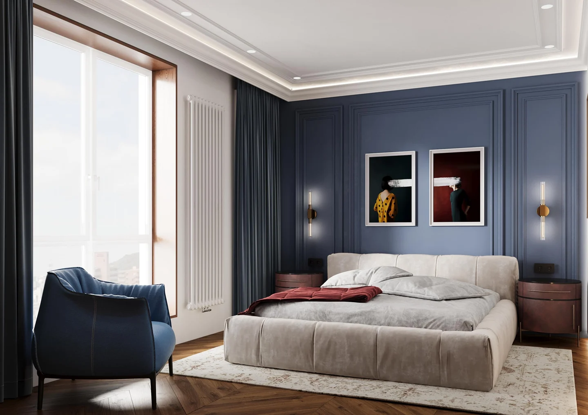

PISKOR Architect · Дизайн-проєкт інтер’єру
Тепло дерева.
Глибина кольору.
Дизайн інтер’єру квартири у Львові — 97,72 м² продуманих рішень для відпочинку, роботи й щоденного життя.
Відкрити історію проєкту
- Локація
- Львів, Україна
- Площа за проєктом
- 97,72 м²
- Тип об’єкта
- Квартира
- Матеріали кейсу
- 3D-візуалізації
Удома є місце
для всього вашого дня.
Зібратися за столом. Зосередитися на роботі. Залишити речі на своїх місцях і перейти до відпочинку. Цю квартиру у Львові розглядаємо через щоденні дії — саме вони пояснюють її планування, меблі та світло.
Далі — історія рішень PISKOR Architect за матеріалами дизайн-проєкту. Завдання й обмеження сформульовані на основі креслень та візуалізацій; показаний результат — запроєктований інтер’єр.
Завдання
Бути разом.
Мати місце для себе.
Як у квартирі площею близько 98 м² поєднати спільне життя, роботу й відпочинок? Планування цього проєкту дає підставу сформулювати запит саме так: простір для зустрічей має співіснувати з окремими кімнатами для зосередження та сну.
Наше рішення
У проєкті передбачено кухню-їдальню, вітальню, окремі кабінет і спальню, гардероб та два санвузли.
Для вашого комфорту
У кожної частини дня є своє місце: розмова за столом може продовжуватися, поки в іншій кімнаті хтось працює.
Планувальна складність
Робота поруч.
Відпочинок — окремо.
Потрібно було узгодити кілька функцій у межах наявної квартири. У комплекті є обміри, демонтаж, монтаж і підсумкове перепланування: робота з інтер’єром починається з розташування кімнат і меблів.
Наше рішення
Кабінет площею 18,22 м² та спальня 16,26 м² залишаються окремими приміщеннями. Їхні меблі й точки освітлення опрацьовані у відповідних планах.
Для вашого комфорту
Робочий стіл отримує власну кімнату. Спальня зберігає сценарій відпочинку з ліжком, кріслом і локальним світлом.
Рішення для зберігання
Речі мають місце.
Простір має характер.
Зберігання проходить через увесь проєкт: від прихожої до кухні та кабінету. Його візуальне завдання — поєднати великі меблеві об’єми з цілісною композицією кімнат.
Наше рішення
Розроблено індивідуальні меблеві креслення. У холі дерев’яні фасади чергуються із дзеркалом; у кухні високі секції для техніки поєднані з робочою поверхнею та верхніми шафами.
Для вашого комфорту
Повсякденні речі можна розподілити між закритими секціями. Фасади й матеріали водночас працюють як частина інтер’єру.
Рішення для атмосфери
Світло розкриває
матеріал.
Сині, деревні та бордові поверхні мають різну глибину й характер. Щоб вони читалися разом, у проєкті поєднані загальне, локальне та декоративне освітлення. Його розміщення пов’язане з меблями й оздобленням.
Наше рішення
Плани світильників і груп вмикання доповнюють підсвічування шаф, вітрин та окремих деталей. Розгортки стін допомагають узгодити меблі, молдинги й точки світла.
Для вашого комфорту
Світло акцентує потрібну частину кімнати: відкриті полиці, дзеркало або робочу зону. Так дрібні деталі підтримують загальну атмосферу.
Запроєктований результат
Одна квартира.
Продуманий день.
Результат цієї роботи — дизайн-проєкт, у якому планування, меблі, оздоблення та інженерні прив’язки розглянуті разом. Від загального образу він переходить до креслень, розгорток і специфікацій для подальшої роботи над інтер’єром.
Наше рішення
На 97,72 м² передбачені місця для спілкування, роботи, сну й зберігання. Навіть гардероб і санвузли продовжують спільну матеріальну та колірну ідею.
Для вашого комфорту
Ви бачите майбутній простір як ціле й можете обговорювати конкретні рішення — від розміщення шафи до світла біля дзеркала.
Усі зображення — візуалізації дизайн-проєкту.
Від планування до деталей
У комплекті: перепланування, розстановка меблів, візуалізації, розгортки стін, плани освітлення, сантехнічні прив’язки, креслення меблів та специфікації.
Про цей проєкт
Що входить у дизайн-проєкт цієї квартири?
Перепланування, розстановка меблів, візуалізації, розгортки стін, плани освітлення, розеток, стелі й підлоги, сантехнічні прив’язки, креслення меблів та специфікації.
На сторінці фотографії чи візуалізації?
У галереї представлені 3D-візуалізації дизайн-проєкту. Вони показують запроєктований інтер’єр квартири.
Як обговорити дизайн власної квартири?
Зателефонуйте до PISKOR Architect і розкажіть про об’єкт, його площу та ваші побажання. Під час розмови узгодимо потрібні етапи роботи та формат співпраці.
PISKOR Architect
Львів · Україна
Ваш простір.
Ваша історія.
Обговорімо дизайн вашої квартири — від планування до матеріалів, світла й деталей.